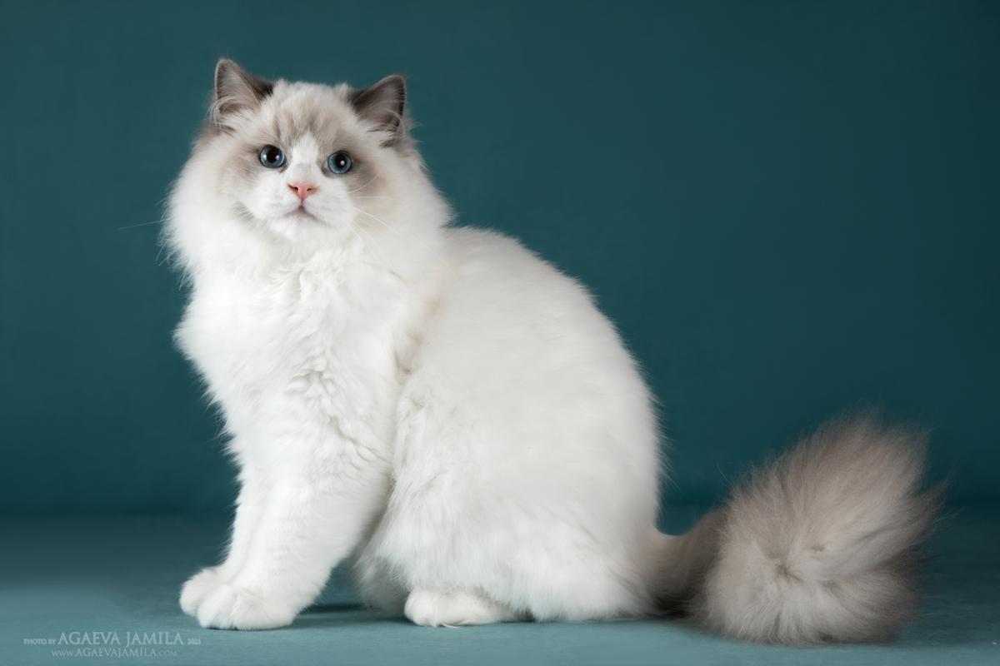
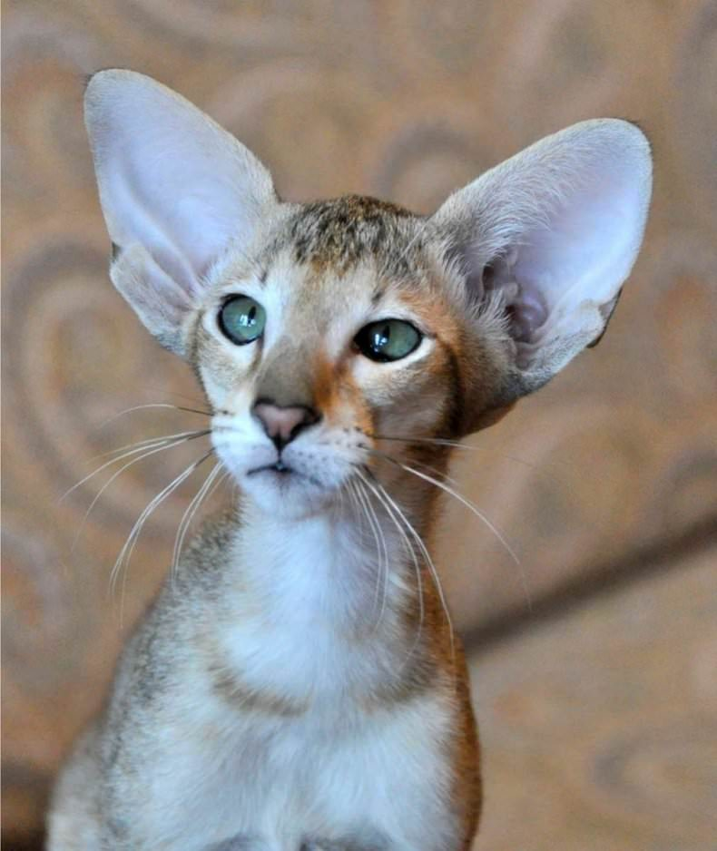
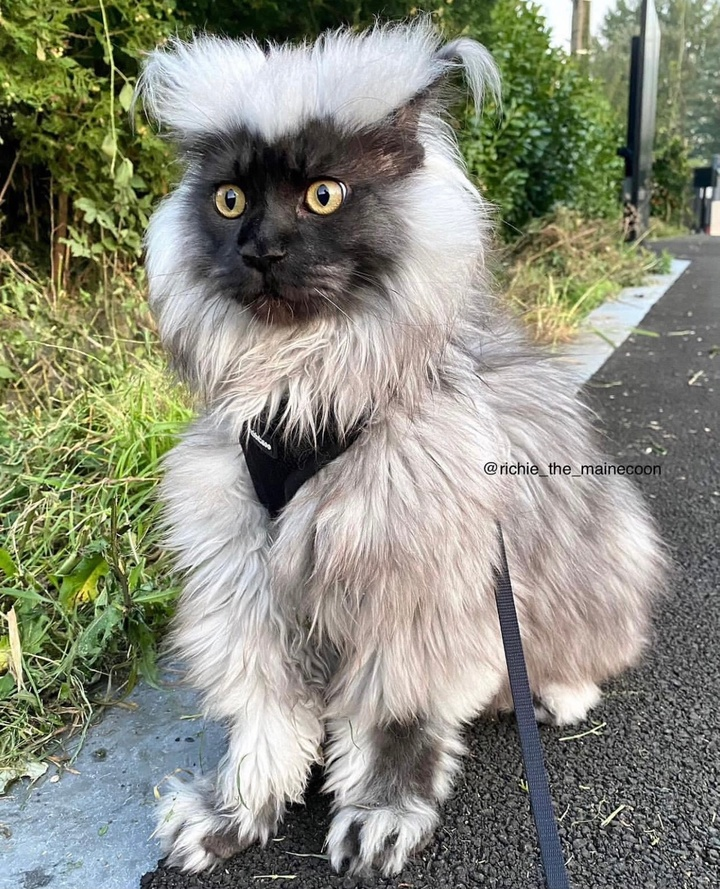

Котики та кіски
Три самі файні породи котиків. Детальна інформація.
1. Регдол

Регдол (Ragdoll) — це одна з найбільш унікальних і популярних порід кішок, що вирізняється своєю величністю, м'якою шерстю і лагідним характером.
Порода була виведена у 1960-х роках у США, її засновницею вважається заводчиця Енн Бейкер. Назва породи, що перекладається як «ганчір’яна лялька»,
пов’язана з характерною особливістю цих кішок розслабляти своє тіло, коли їх беруть на руки.
Зовнішній вигляд
Регдоли — великі та м'язисті кішки, які мають привабливий і благородний вигляд.
- Розміри: дорослі самці важать від 6 до 9 кг, самки — від 4 до 6 кг.
- Шерсть: напівдовга, м'яка і шовковиста на дотик, схожа на кролячу. Вона не має щільного підшерстя,
тому не так сильно звалюється, як у багатьох довгошерстих порід.
- Забарвлення: стандартними є забарвлення у стилі «пойнт» (темніші відтінки на мордочці, вухах, лапах і хвості).
Основні варіанти включають:
Колорпойнт — темні кінцівки без білих міток.
Мітед (Mitted) — темні кінцівки з білими «шкарпетками» і смужками на животі.
Біколор (Bicolor) — білий трикутник на мордочці, білий живіт і лапи.
- Очі: великі, овальної форми, яскраво-блакитного кольору.
Характер
Регдоли відомі своєю надзвичайною лагідністю, спокоєм і відданістю. Вони чудово підходять для родин із дітьми або іншими домашніми тваринами, адже ці кішки дуже терплячі та дружні.
- Лагідність: обожнюють проводити час із господарем, люблять бути на руках і часто ходять за людиною по дому.
- Інтелект: вони легко навчаються, можуть виконувати прості команди та навіть приносити іграшки, схожі на собак.
- Соціальність: регдоли потребують уваги, добре ладнають з іншими домашніми улюбленцями, зокрема собаками.
Догляд
Регдоли не потребують складного догляду, проте є кілька аспектів, на які варто звернути увагу:
- Розчісування: шерсть слід розчісувати 1–2 рази на тиждень, щоб уникнути утворення ковтунів.
- Харчування: через великий розмір і схильність до набору ваги важливо стежити за збалансованістю харчування.
- Здоров’я: загалом регдоли вважаються здоровою породою, але вони можуть мати генетичну схильність до гіпертрофічної кардіоміопатії.
Регулярні огляди у ветеринара допоможуть уникнути проблем.
Особливості
Регдоли вважаються ідеальними компаньйонами завдяки своєму характеру, але водночас вони не надто активні. Вони можуть годинами лежати поряд із господарем, насолоджуючись компанією, але не будуть нав'язливо вимагати уваги.
Ця порода підходить тим, хто хоче мати ніжного та граційного друга, здатного створювати атмосферу затишку та спокою.
2. Орієнтальна короткошерста

Орієнтальна короткошерста — це елегантна й витончена порода кішок, яка вирізняється своїм унікальним зовнішнім виглядом і енергійним характером.
Її представники є близькими родичами сіамських котів, проте мають значно ширшу палітру забарвлень. Ця порода була виведена в середині ХХ століття
у Великій Британії з метою розширення кольорових варіацій традиційних сіамів, при цьому зберігши їхню стрункість і витонченість.
Зовнішній вигляд
Орієнтальні коти мають надзвичайно струнке та граціозне тіло, яке часто порівнюють із виглядом моделей.
- Розміри: середні, вага коливається від 4 до 6 кг.
- Тіло: довге й м’язисте, з тонким кістяком. Кішки мають довгі ноги та витягнутий хвіст.
- Голова: клиноподібної форми, видовжена, з плавними лініями.
- Очі: великі, мигдалеподібної форми, зазвичай насиченого зеленого кольору.
- Вуха: дуже великі, поставлені широко, що створює характерний вираз.
- Шерсть: коротка, дуже гладка й шовковиста, щільно прилягає до тіла. Забарвлення може бути однотонним, таббі, двоколірним, черепаховим та іншим.
Характер
Ці кішки славляться своєю активністю, розумом і комунікабельністю. Вони мають яскраво виражену особистість і часто вибирають одну людину в домі,
до якої проявляють найбільшу відданість.
- Орієнтальні коти дуже соціальні та не люблять залишатися на самоті. Вони активно шукають спілкування з людьми,
люблять гратися й досліджувати навколишнє середовище.
- Їх часто називають «розмовляючими» через схильність до «бесіди» з господарем, оскільки вони видають різноманітні звуки, щоб висловити свої емоції.
- Завдяки високому інтелекту ці кішки легко навчаються, можуть засвоїти різні трюки або команди.
Догляд
Орієнтальні короткошерсті кішки вимагають мінімального догляду завдяки своїй короткій шерсті.
- Розчісування: достатньо проводити раз на тиждень, щоб видалити відмерлі волоски.
- Харчування: важливо забезпечити збалансовану дієту, враховуючи їхню високу активність.
- Активність: через енергійний характер їм необхідно багато іграшок і можливостей для фізичної активності.
Особливості
Орієнтальні короткошерсті коти підходять для активних людей або родин, які готові приділяти їм багато уваги. Їхній товариський характер і любов до спілкування роблять їх чудовими компаньйонами. Ці кішки прекрасно ладнають з іншими домашніми улюбленцями та дітьми, але не люблять довго залишатися на самоті. Їхній яскравий зовнішній вигляд і неповторний характер роблять їх одними з найпопулярніших порід серед любителів котів.
3. Мейн-кун

Мейн-кун — це одна з найвідоміших і найбільших порід домашніх котів, яка походить із штату Мен (США). Ці величні кішки
славляться своїм розкішним виглядом, спокійним характером і відмінними соціальними якостями. Вони ідеально поєднують у собі
зовнішню силу й внутрішню лагідність, через що отримали прізвисько «ніжні велетні».
Зовнішній вигляд
Мейн-куни вирізняються своїми великими розмірами й густою шерстю, яка пристосована до холодного клімату.
- Розміри: це одна з найбільших порід, вага дорослого кота може досягати 8-12 кг, а довжина з хвостом — до 1 метра.
- Тіло: м’язисте, міцне, пропорційне, із широкими грудьми.
- Голова: середнього розміру, з квадратною мордочкою.
- Очі: великі, овальні, виразні, кольори варіюються від зеленого до золотистого.
- Вуха: великі, поставлені високо, з характерними китицями, схожими на вуха рисі.
- Хвіст: довгий, пишний, добре вкритий густою шерстю.
- Шерсть: напівдовга, водонепроникна, густа, з м’яким підшерстям. Найгустіша шерсть розташована на шиї (комір), животі та хвості.
Характер і поведінка
Мейн-куни мають спокійну та доброзичливу вдачу, що робить їх ідеальними компаньйонами.
- Це дуже соціальні коти, які люблять бути поруч із людьми. Вони добре ладнають із дітьми та іншими домашніми тваринами.
- Мейн-куни не нав'язливі, але люблять спостерігати за господарем і брати участь у сімейному житті.
- Вони розумні, легко навчаються та здатні засвоювати команди. Завдяки своїй кмітливості мейн-куни можуть відкривати двері,
приносити іграшки й виконувати прості трюки.
- На відміну від багатьох котів, вони полюбляють воду й часто граються з нею.
Догляд
Мейн-куни не потребують особливих зусиль у догляді, хоча деякі аспекти вимагають уваги.
- Шерсть: через її густоту необхідно розчісувати кілька разів на тиждень, щоб уникнути утворення ковтунів.
- Харчування: через великі розміри й активність їм потрібне збалансоване й поживне харчування.
- Активність: вони люблять ігри та потребують простору для руху. Іграшки та місця для лазіння допоможуть їм підтримувати активність.
Особливості
Мейн-куни привертають увагу своїм величним виглядом і добрим характером. Вони прекрасно підходять для родин із дітьми чи іншими тваринами. Їхній унікальний зовнішній вигляд, у поєднанні з дружелюбністю, робить цю породу однією з найулюбленіших у світі. Ці коти легко адаптуються до життя в різних умовах, залишаючись відданими й ласкавими друзями для своїх власників.
Попередня сторінка